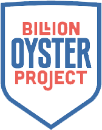

About Us
All too often, we forget about the other organisms that share the world with us, one of these being oysters. The NYC harbors were once stocked full of oyster reefs that benefitted ecosystems and people alike. Across the Hudson River 220,000 acres were covered in oyster reefs; one oyster alone can filter 50 gallons of water a day. With more oysters present, we have a natural combatance against pollutants and aquatic disasters. Without oysters our harbors are lacking filteration and loosing a fundamental building block in the ecosystem.Luckily, we have the Billion Oyster Project that seeks to fix the current situation many harbors face with their lack of oysters by re-implementing them back into our waters. They need your help to reach their goal!
